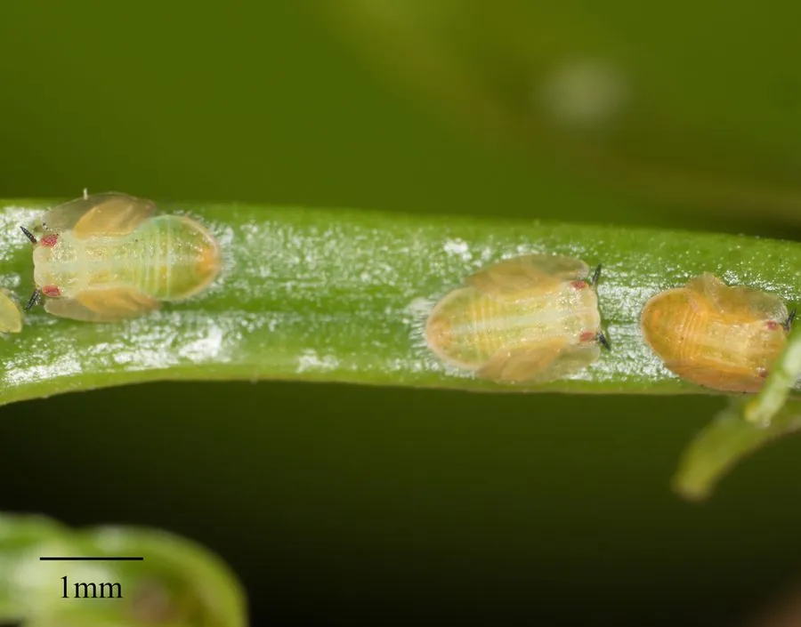

昆虫 · 动物界
柑橘木虱 Diaphorina citri

柑橘园中的小型木虱，成虫和若虫刺吸嫩梢汁液，是柑橘黄龙病的主要传播媒介，对柑橘产业威胁很大。
- 分类
- 门节肢动物门纲昆虫纲目半翅目科木虱科属木虱属
- 栖息环境
- 柑橘园和芸香科植物种植区，在嫩梢和叶背活动
- 地理分布
- 亚洲柑橘产区，包括中国南方、东南亚和南亚
- 保护级别
- 暂无评估；柑橘产业重大害虫
物种志
柑橘木虱成虫体长约 3 mm，体灰褐色至黄褐色，前翅有褐色斑纹，停歇时双翅呈屋脊状；若虫体色淡黄，群集在嫩梢和叶背，分泌白色蜡丝。它属于木虱科，口器为刺吸式。
它主要危害柑橘、柚、柠檬等芸香科植物，成虫和若虫刺吸嫩梢汁液，造成嫩梢萎缩、叶片卷曲，它分泌的蜜露还会诱发煤污病。更严重的是，柑橘木虱是柑橘黄龙病的主要传播媒介，带毒木虱叮咬健康植株可传播这种毁灭性病害。防治以监测预警、清除病株和野生寄主、统一放梢、保护天敌和科学用药为主，柑橘产区需要统防统治，控制木虱种群以降低黄龙病传播风险。
形态与习性
- 食性成虫和若虫刺吸柑橘嫩梢汁液
- 体长约 3 mm
- 识别体灰褐至黄褐，前翅有褐色斑纹
- 危害是柑橘黄龙病的主要传播媒介
- 防治清除病株和野生寄主、统一放梢、保护天敌和科学用药
趣味知识
- 柑橘木虱体型只有 3 毫米左右，却是黄龙病的主要传播者。
- 它的若虫会分泌白色蜡丝，常躲在嫩梢和叶背。
- 防控柑橘黄龙病，关键之一是统防统治柑橘木虱。